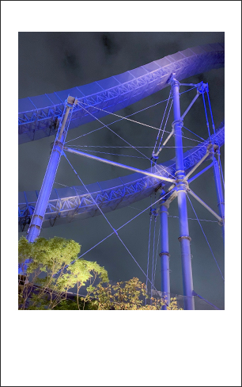
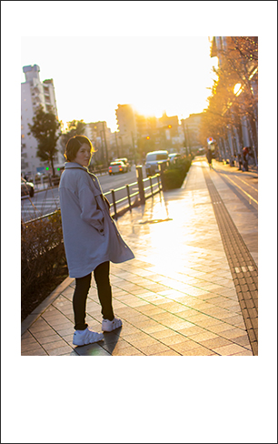

Photo
好きなことのうちの１つが写真撮影です。
カメラは6年使い込んだCanonのKissから、最近EOS90Dに新調しました。近所の写真を撮りに行くこともあれば、ポートレートだけしにモデルとして友人に来てもらって、いろんな街に行ったりします。


好きなことのうちの１つが写真撮影です。
カメラは6年使い込んだCanonのKissから、最近EOS90Dに新調しました。近所の写真を撮りに行くこともあれば、ポートレートだけしにモデルとして友人に来てもらって、いろんな街に行ったりします。